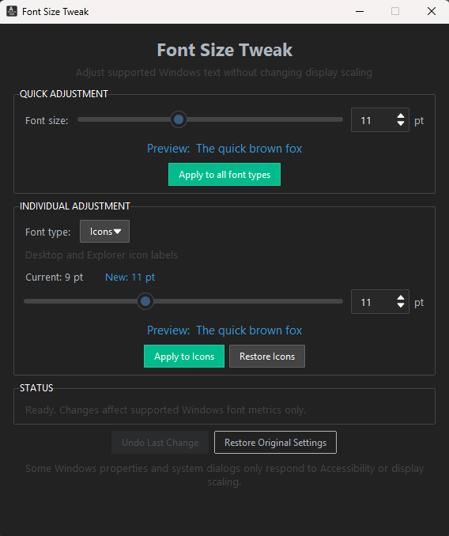

Everyday interface text
Adjust Explorer file and icon labels, menus, title bars, message and dialog font metrics, and status bar fonts.
A focused, portable utility for adjusting supported Windows UI fonts—including File Explorer labels, menus and title bars—while leaving display scaling alone.

Simple by design
Tune supported font metrics together or individually, with a clear preview before you apply.
Adjust Explorer file and icon labels, menus, title bars, message and dialog font metrics, and status bar fonts.
Change all supported font metrics together when you want a consistent size across the Windows interface.
Fine-tune individual metrics with current-size detection and a live font preview.
Use the built-in reset functionality whenever you want to return the supported settings to their defaults.
A more precise option
Sometimes only File Explorer labels, menus, title bars or other supported Windows UI text need to be larger. Display scaling can also enlarge apps, controls and spacing that were already comfortable.
Font Size Tweak was created for this problem. This Windows 10/11 font-size utility adjusts supported system font metrics without deliberately scaling the whole desktop, so you can increase Windows text without making everything bigger.
Downloads
Download the newest portable release, or choose an earlier version. Release information updates from GitHub when available.
Available from GitHub Releases
Legacy release
Under the hood
Font Size Tweak changes supported font metrics stored for your user account under:
HKEY_CURRENT_USER\Control Panel\Desktop\WindowMetricsThe tool preserves the existing registry font data and adjusts the relevant font-size metric. It does not change global display scaling.
Some Windows UI elements do not use these legacy system font metrics, so they may not respond.
Windows does not expose every UI font through classic metrics. Newer or differently rendered interfaces may ignore these settings, and results vary between components and Windows builds. Signing out and back in may be required for a complete refresh.
Helpful answers
In Font Size Tweak, increase the Icon font metric and apply the change. This metric is used by Explorer file and folder labels on supported Windows builds; sign out and back in if Explorer does not refresh immediately.
Explorer text can feel disproportionately small on a high-resolution display or at the default scale. Windows offers broader text and display scaling, while Font Size Tweak provides a more targeted adjustment for supported Explorer labels.
Yes, for supported interface text. Font Size Tweak changes Windows font metrics rather than display scaling, so it does not deliberately enlarge app layouts or icon graphics. Components that ignore these metrics will not change.
Adjust Menu individually in Font Size Tweak's Advanced controls, or use Quick Apply to change all supported font metrics together. Some modern or custom menus may not use this Windows metric.
Display scaling is designed to resize the interface as a whole, including controls, spacing, windows and text. If only certain text is hard to read, changing supported font metrics can be a narrower option.
Font Size Tweak lets you adjust supported title bar, menu, message, icon-label and status font metrics independently, without changing display scaling. Not every Windows interface uses these metrics.
Yes. Font Size Tweak is intended for Windows 10 and Windows 11, although results can differ between components and Windows builds.
No. It changes settings for the current Windows user and does not require administrator access.
Not every interface uses the classic Windows font metrics. Newer or custom-rendered components may ignore them.
Yes. The application is free to download and use under the MIT licence.
Yes. Its source code is public on GitHub and can be inspected before running the executable.
Use the reset function in Font Size Tweak, then sign out and back in if needed to refresh the interface.
Yes. Font Size Tweak is a free, lightweight, open-source option for adjusting supported Windows font metrics. The tools have different feature sets, so choose the one that fits your needs.
Open by default
Font Size Tweak is released under the MIT licence. You can inspect the code before running the executable, report a problem, or contribute an improvement.
Found Font Size Tweak useful? Star the project on GitHub to help more people discover it.